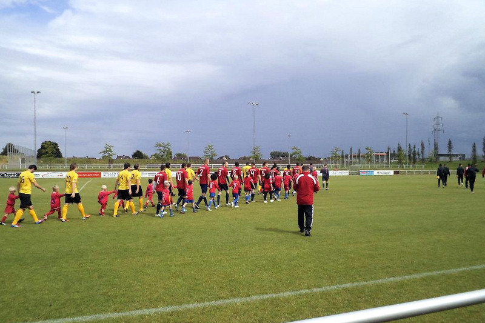

|
SVF Herringen - Roda JC
Kerkrade (1-5) 14 juli 2012 |
Roda JC Kerkrade eindigt het trainingskamp in Kamen
met een 1-5 (1-1) winst in de oefenpartij tegen SVF
Herringen door doelpunten van Malki (2x), Danilo
(2x) en Lebedynski.
Roda JC, dat begint met Filip Kurto op doel, komt in
de 14e minuut op een 0-1 voorsprong nadat Danilo een
corner van Fledderus tegen de touwen kopt. Even
later is het Herringen dat door laconiek verdedigen
van de Kerkraadse ploeg de gelijkmaker mag scoren in
de
20e minuut.
Na de rust komt Lebedynski De Beule in het veld, Sutchuin Djoum voor Hempte
en Donald vervangt Ramzi. Roda heeft veel balbezit maar weet aanvankelijk geen
raad met de straffe Duitse verdediging die eenvoudig tien man rond de eigen
zestien posteert. In de 54e minuut is het Malki die na een voorzet van Monteyne
met een kopbal 1-2 maakt. Na een overtreding op Djoum in de zestien mag Malki in
de
65e een strafschop nemen. Hij schuift de bal rechts naast het doel.
Zeven minuten later is het wel raak en scoort Malki beheerst 1-3. De Duitsers
hebben geen antwoord op het snellere aanvalsspel en Danilo schiet in de 75e
minuut met een afstandsschot 1-4 binnen. Roda JC houdt het tempo hoog en gaat op
jacht naar meer doelpunten. Malki ziet zijn schot gekeerd door de paal,
Lebedynski is er het snelst bij en tikt in de rebound 1-5 binnen.

foto: jeroen habets
Danilo 0-1
SVF Herringen 1-1
Malki 1-2
Malki 1-3
Danilo 1-4
Lebedynski 1-5
Opstelling: Filip Kurto, Martijn Monteyene, Rob Wielaert, Bart Biemans, Jimmy
Hempte (Arnaud Sutchuin Djoum), Guus Hupperts, Danilo, Mark-Jan Fledderus, Adil
Ramzi (Mitchell Donald), Davy de Beule (Mikolaj Lebedynski), Sanharib Malki
|
|
|